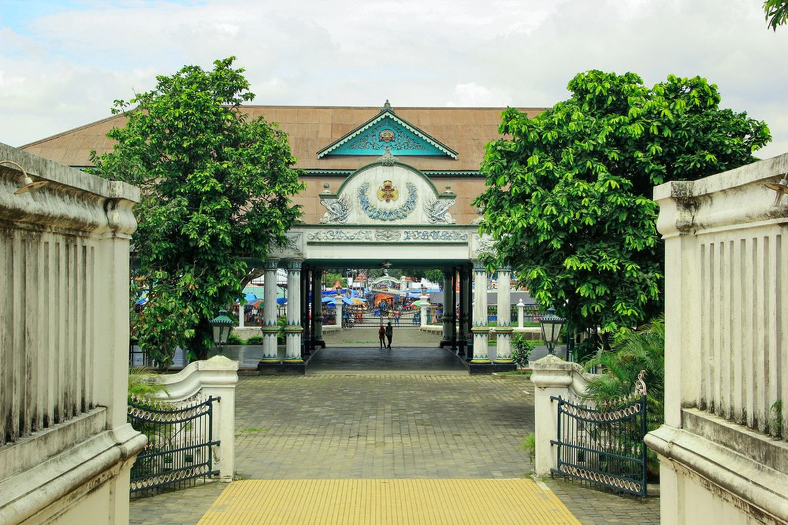

Kota Yogyakarta
TEMPAT WAKTU MELAMBAT DEMI SECARIK KENANGAN
exploreGaris Imajiner Yogyakarta merupakan konsep tata ruang filosofis yang digagas oleh Sri Sultan Hamengku Buwono I saat mendirikan Keraton Yogyakarta pada tahun 1755. Garis lurus yang membentang sepanjang 15 kilometer ini menghubungkan Gunung Merapi di utara, Keraton di tengah, dan Pantai Parangtritis (Laut Selatan) di selatan. Secara fisik, sumbu ini tidak kasat mata, namun diwujudkan melalui penataan bangunan dan jalan ikonik seperti Tugu Golong Gilig (Tugu Pal Putih) dan Panggung Krapyak. Keberadaan garis ini menegaskan harmoni antara manusia, alam (gunung dan laut), serta Sang Pencipta, yang menjadi fondasi tata kota Kesultanan Yogyakarta.
Di balik struktur geografisnya, garis ini menyimpan filosofi mendalam tentang perjalanan hidup manusia yang dikenal sebagai Sumbu Filosofi. Sumbu dari Panggung Krapyak menuju Keraton melambangkan Sangkaning Dumadi, yaitu filosofi tentang kelahiran manusia, kesucian masa kanak-kanak, hingga beranjak dewasa. Sebaliknya, sumbu dari Tugu Pal Putih menuju Keraton melambangkan Paraning Dumadi, yang menggambarkan perjalanan manusia kembali menghadap Sang Pencipta setelah berhasil mengendalikan hawa nafsu keduniawian. Melalui keselarasan makrokosmos (alam semesta) dan mikrokosmos (manusia), Keraton Yogyakarta diposisikan sebagai titik keseimbangan spiritual agar seorang pemimpin mampu mengayomi rakyatnya dengan bijaksana.

Keraton Yogyakarta Hadiningrat didirikan pada tahun 1755 oleh Pangeran Mangkubumi, yang kemudian bergelar Sri Sultan Hamengku Buwono I. Berdirinya keraton ini merupakan hasil dari Perjanjian Giyanti yang memecah Kerajaan Mataram Islam menjadi dua wilayah, yaitu Kasunanan Surakarta dan Kasultanan Yogyakarta. Sultan Hamengku Buwono I memilih sebuah lokasi strategis berupa hutan beringin yang diapit oleh dua sungai sebagai tempat pembangunan istana. Sejak saat itu, Keraton Yogyakarta berdiri bukan hanya sebagai pusat pemerintahan baru, melainkan juga sebagai benteng pertahanan kebudayaan Jawa yang kokoh di tengah dinamika politik kolonial Belanda.
Sepanjang sejarahnya, Keraton Yogyakarta memainkan peran krusial dalam perjuangan kemerdekaan Indonesia. Pada masa pendudukan Jepang hingga agresi militer Belanda, Sri Sultan Hamengku Buwono IX menunjukkan nasionalisme yang tinggi dengan menyatakan Keraton Yogyakarta sebagai bagian dari Republik Indonesia, bahkan sempat menjadikan Yogyakarta sebagai Ibu Kota Negara pada tahun 1946. Atas jasa besar tersebut, keraton ini mendapatkan status daerah istimewa. Hingga saat ini, Keraton Yogyakarta tetap berdiri megah sebagai pusat pelestarian adat, seni, dan budaya Jawa, di mana Sultan yang bertakhta sekaligus mengemban amanah sebagai Gubernur Daerah Istimewa Yogyakarta.
Images courtesy of Unsplash
DESIGN · DEVELOP · DELIVER
CLEAN LAYOUTS BUILT FOR IMPACT AND CLARITY
IDENTITIES THAT RESONATE AND ENDURE
RESPONSIVE CODE THAT PERFORMS EVERYWHERE
From boutique startups to established brands, our portfolio reflects a commitment to quality and attention to detail. Each project is an opportunity to push boundaries and explore new ideas.
LET'S START SOMETHING GREAT TOGETHER